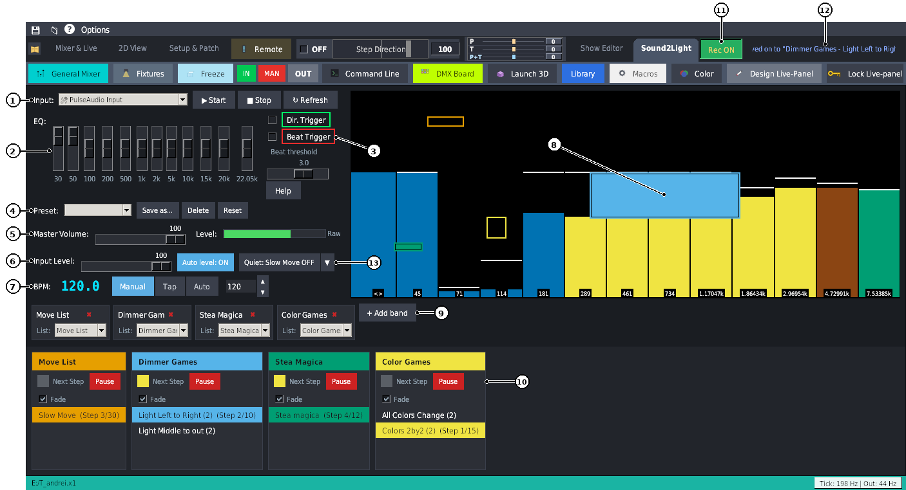

For: FullPlayer
With Sound2Light the music plays the lights. The program listens to the sound - a microphone or line input, or the music that plays on the computer itself - and shows it as 12 bars, from the deep bass on the left to the high sounds on the right. On top of the bars you put squares (bands). Each square is linked to a BPM list: a list of chases. Every time a bar reaches into a square, the list takes one step - the next step of its chase, and after the last step of a chase, the next chase of the list. So the lights change with the bass, with the voice, with the hi-hat, as you decide.
Open it with the Sound2Light tab at the top of the main window.

A copy of Andrei_edit while music plays: four lists, their squares on the bars, the current step of each list lit in its colour.
| 1 | Input - where the sound comes from, and Start / Stop / Refresh. See The sound. |
| 2 | EQ - 12 sliders that make some sounds stronger or weaker before anything else uses them. |
| 3 | Dir. Trigger and Beat Trigger with the Beat threshold: two special squares. See Squares and bands. |
| 4 | Preset - EQ settings saved under a name (Save as..., Delete, Reset). |
| 5 | Master Volume (the computer's volume) and Level - how loud the sound is now. |
| 6 | Input Level - the level of the chosen input (a microphone, a line input). |
| 7 | BPM - the tempo: Manual, Tap or Auto. It is shown for you; the lists step on the squares, not on this number. |
| 8 | The graph: the 12 bars of the sound and the squares. A square that a bar reaches into is filled in. |
| 9 | The bands: one for each square - its name, the list it steps, ✖ to delete it; + Add band adds a square. |
| 10 | The BPM lists: one column for each list, with Next Step, Pause, Fade and its chases. The chase playing now is lit, with its step: (Step 3/30). With Hide list name in Bpm list entries ticked (on at first) only the chase's name is shown; see BPM lists. |
| 11 | Rec ON / Rec OFF - the same as Start / Stop: green while the program listens. |
| 12 | The status line: what the lists just did ("Move List": stepped "Move List - Slow Move" to cue 6). A long line moves sideways so all of it is read. |
| 13 | Auto level: ON / OFF and Quiet: Slow Move ON / OFF with its arrow. See The sound. |
| Page | What it explains |
|---|---|
| The sound | Choosing the input, starting and stopping, the volumes, the EQ and its presets, the BPM. |
| BPM lists | Making a list from chases of the Library, adding to it, the list's column, Pause and Fade, deleting. |
| Squares and bands | Placing and sizing the squares, linking them to lists, Beat Trigger, Dir. Trigger. |
| Testing | Trying a list without music (right click) and with music; what to watch. |
| Example: a new list from start to end | A list made, placed and tested on Andrei_edit, step by step. |
| What is saved | Where the lists, squares and EQ are kept; the Player; Step Direction and the remote. |
The short way: in the Library, right-click a chase > Add to Bpm list..., give a name, press Ok. The list, its square on the graph and the link between them are made at once. Then press Start (or right-click the new square to try it without music).